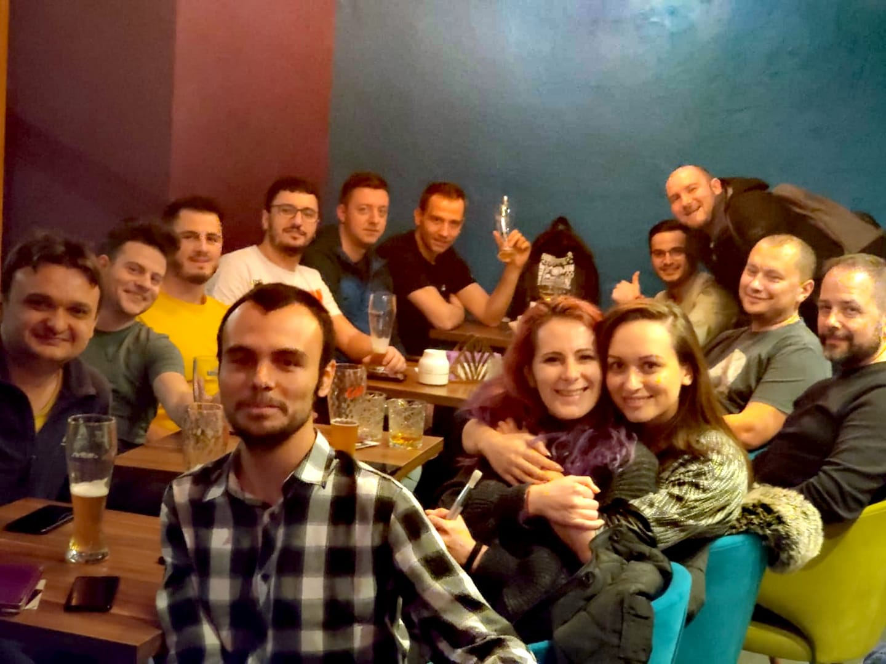

Un singur lucru care face treaba să meargă la serviciu
by Adrian Harabulă on 15 January, 2020
Un lucru foarte bun de precizat, despre care nu prea se vorbește, dar în mod sigur se practică și cei care nu practică ar face bine să o facă, sunt ieșirile în oraș după serviciu din când în când, indiferent de firma la care lucrezi.
Zilele sunt cam ocupate, timpul trece repede, ard lucruri, uneori nu prea apuci să vorbești cu oamenii cu care lucrezi în același sediu, poate îi saluți și vorbești de vreme un pic. Nu e ca și cum nu se poate vorbi, dar energia și focusul e pe treaba care e de făcut și nu pe oamenii din jurul nostru, astfel că se întâmplă să stăm cu lunile la birou și să știm foarte puțin despre oamenii pe care îi vedem zilnic. Poate sunt vecini, poate am fost la aceleași interviuri la un moment dat, poate au și ei problemele lor în afara serviciului și nu ai de unde să le știi dacă ești atent doar la treburile de la serviciu.
Așa că se mai practică uneori după serviciu ieșiri în oraș, unde oamenii se adună și în alt context decât cel de la birou și focusul de la treabă se schimbă pe oameni. Nu e lucru mai minunat când se întâmplă asta, pentru că dacă cunoști mai bine oamenii cu care lucrezi și încrederea ta în ei crește (și invers) și treaba merge mult mai bine. Am zis mai devreme că suntem focusați pe treabă la serviciu, dar adevărul de la mijloc e că atunci când ne facem treaba, totul depinde de niște oameni undeva, cu care trebuie să vorbești și de la care ai nevoie de ceva ca să îți faci treaba în continuare. Și nu e lucru mai bun care se poate întâmpla ce crește productivitatea la birou atunci când oamenii se cunosc între ei.
Dacă la firma la care lucrezi nu sunt ieșiri în oraș, măcar odată la câteva luni, fă ceva, propune tu. Ca treaba să meargă la birou în primul rând trebuie să meargă între oameni.
